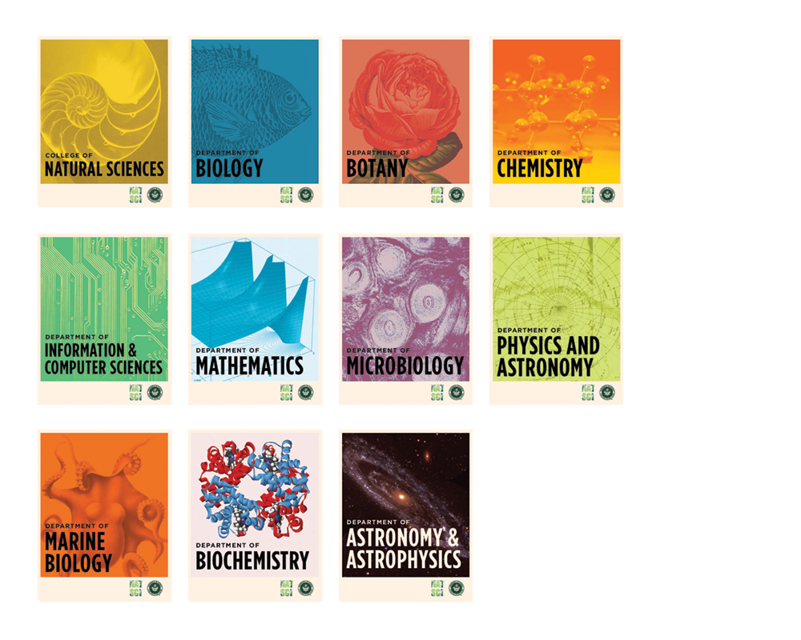

NatSci Posters
2014
As part of loosely federating the brand identities at the College of Natural Sciences at the University of Hawai‘i at Mānoa, a concept series of department posters was commissioned. The illustrations were sourced from various public domain libraries.
Tools used: InDesign, Illustrator, Photoshop
←
